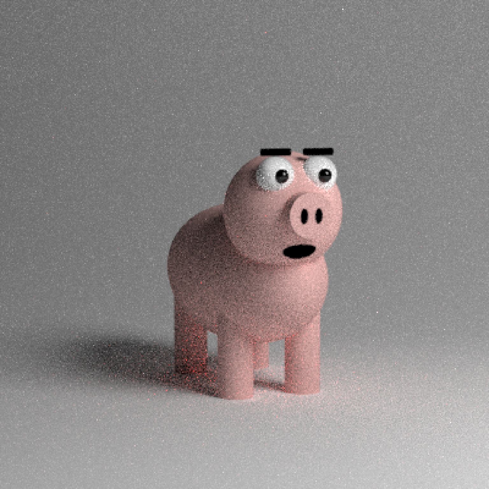
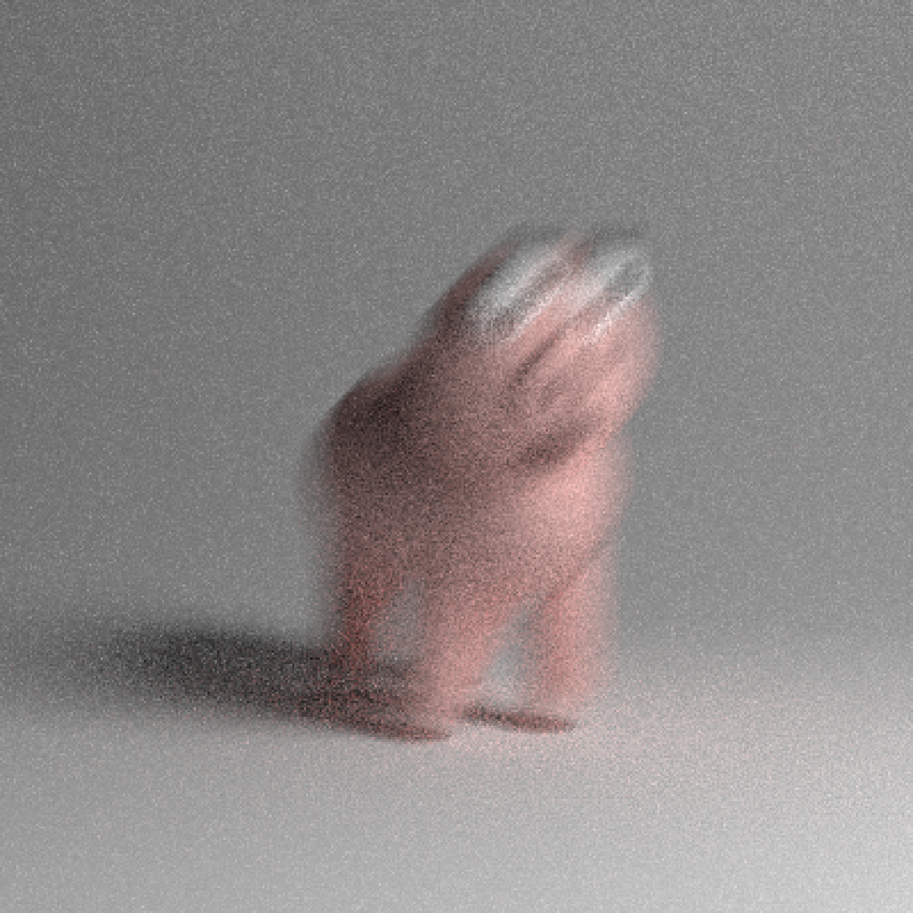
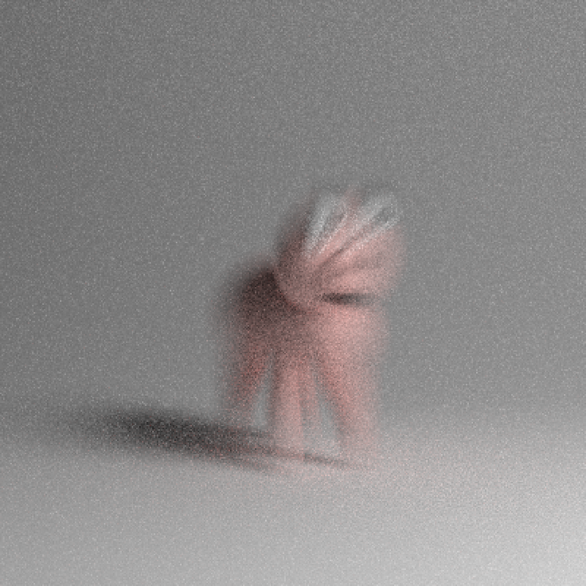
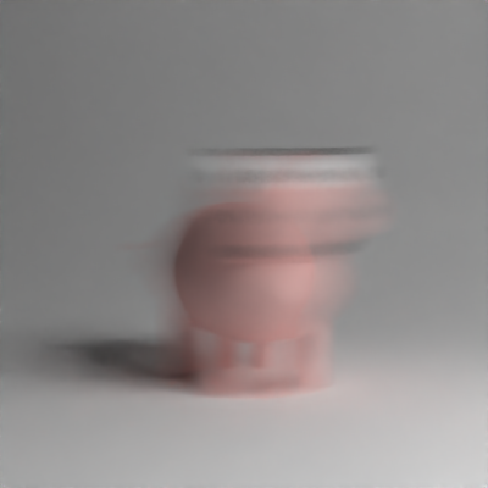
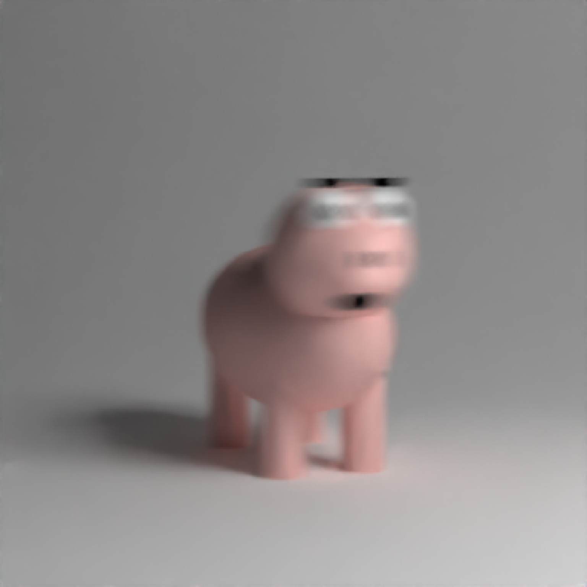
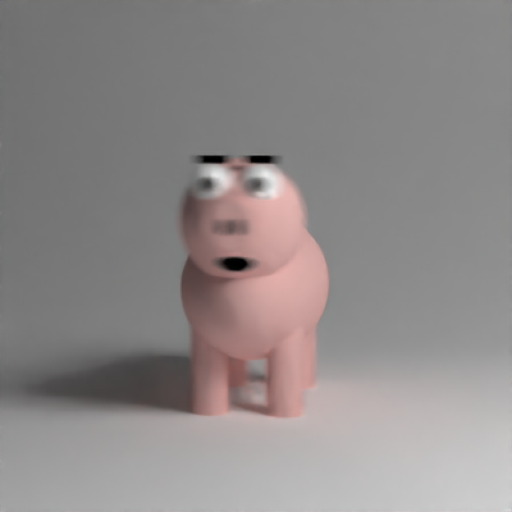

This function animates an object between two states. This animates objects separately from the transformations set in `group_objects()` and in the object transformations themselves. This creates motion blur, controlled by the shutter open/close options in `render_scene()`.
animate_objects(
scene,
start_time = 0,
end_time = 1,
start_pivot_point = c(0, 0, 0),
start_position = c(0, 0, 0),
start_angle = c(0, 0, 0),
start_order_rotation = c(1, 2, 3),
start_scale = c(1, 1, 1),
start_axis_rotation = NA,
end_pivot_point = c(0, 0, 0),
end_position = c(0, 0, 0),
end_angle = c(0, 0, 0),
end_order_rotation = c(1, 2, 3),
end_scale = c(1, 1, 1),
end_axis_rotation = NA
)Arguments
- scene
Tibble of pre-existing object locations.
- start_time
Default `0`. Start time of movement.
- end_time
Default `1`. End time of movement.
- start_pivot_point
Default `c(0,0,0)`. The point about which to pivot, scale, and move the objects.
- start_position
Default `c(0,0,0)`. Vector indicating where to offset the objects.
- start_angle
Default `c(0,0,0)`. Angle of rotation around the x, y, and z axes, applied in the order specified in `order_rotation`.
- start_order_rotation
Default `c(1,2,3)`. The order to apply the rotations, referring to "x", "y", and "z".
- start_scale
Default `c(1,1,1)`. Scaling factor for x, y, and z directions for all objects.
- start_axis_rotation
Default `NA`. Provide an axis of rotation and a single angle (via `angle`) of rotation
- end_pivot_point
Default `c(0,0,0)`. The point about which to pivot, scale, and move the group.
- end_position
Default `c(0,0,0)`. Vector indicating where to offset the objects.
- end_angle
Default `c(0,0,0)`. Angle of rotation around the x, y, and z axes, applied in the order specified in `order_rotation`.
- end_order_rotation
Default `c(1,2,3)`. The order to apply the rotations, referring to "x", "y", and "z".
- end_scale
Default `c(1,1,1)`. Scaling factor for x, y, and z directions for all objects.
- end_axis_rotation
Default `NA`. Provide an axis of rotation and a single angle (via `angle`) of rotation around that axis.
Value
Tibble of animated object.
Examples
#Render a pig
if(rayrender:::run_documentation()) {
generate_studio() %>%
add_object(pig(y=-1.2,scale=0.5,angle=c(0,-70,0)))%>%
add_object(sphere(y=5,x=5,z=5,radius=2,material=light())) %>%
render_scene(samples=128,sample_method = "sobol_blue")
}

if(rayrender:::run_documentation()) {
#Render a moving pig
generate_studio() %>%
add_object(
animate_objects(
pig(y=-1.2,scale=0.5,angle=c(0,-70,0)),
start_position = c(-0.1,0,0), end_position = c(0.1,0.2,0))
) %>%
add_object(sphere(y=5,x=5,z=5,radius=2,material=light())) %>%
render_scene(samples=128,sample_method = "sobol_blue",clamp_value = 10)
}

if(rayrender:::run_documentation()) {
#Render a shrinking pig
generate_studio() %>%
add_object(
animate_objects(
pig(y=-1.2,scale=0.5,angle=c(0,-70,0)),
start_scale = c(1,1,1), end_scale = c(0.5,0.5,0.5))
) %>%
add_object(sphere(y=5,x=5,z=5,radius=2,material=light())) %>%
render_scene(samples=128,sample_method = "sobol_blue",clamp_value = 10)
}

if(rayrender:::run_documentation()) {
#Render a spinning pig
generate_studio() %>%
add_object(
animate_objects(
pig(y=-1.2,scale=0.5,angle=c(0,-70,0)),
start_angle = c(0,-30,0), end_angle = c(0,30,0))
) %>%
add_object(sphere(y=5,x=5,z=5,radius=2,material=light())) %>%
render_scene(samples=128,sample_method = "sobol_blue",clamp_value = 10)
}

if(rayrender:::run_documentation()) {
#Shorten the open shutter time frame
generate_studio() %>%
add_object(
animate_objects(
pig(y=-1.2,scale=0.5,angle=c(0,-70,0)),
start_angle = c(0,-30,0), end_angle = c(0,30,0))
) %>%
add_object(sphere(y=5,x=5,z=5,radius=2,material=light())) %>%
render_scene(samples=128,sample_method = "sobol_blue",clamp_value = 10,
shutteropen=0.4, shutterclose = 0.6)
}

if(rayrender:::run_documentation()) {
#Change the time frame when the shutter is open
generate_studio() %>%
add_object(
animate_objects(
pig(y=-1.2,scale=0.5,angle=c(0,-70,0)),
start_angle = c(0,-30,0), end_angle = c(0,30,0))
) %>%
add_object(sphere(y=5,x=5,z=5,radius=2,material=light())) %>%
render_scene(samples=128,sample_method = "sobol_blue",clamp_value = 10,
shutteropen=0, shutterclose = 0.1)
}

if(rayrender:::run_documentation()) {
#Shorten the time span in which the movement occurs (which, in effect,
#increases the speed of the transition).
generate_studio() %>%
add_object(
animate_objects(start_time = 0, end_time=0.1,
pig(y=-1.2,scale=0.5,angle=c(0,-70,0)),
start_angle = c(0,-30,0), end_angle = c(0,30,0))
) %>%
add_object(sphere(y=5,x=5,z=5,radius=2,material=light())) %>%
render_scene(samples=128,sample_method = "sobol_blue",clamp_value = 10,
shutteropen=0, shutterclose = 0.1)
}